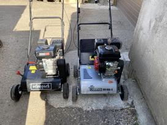

Welcome to benzinas
NESTE FUTURA benzinas | Neste
2020.10.29 11:20
Pereiti į pagrindinį turinį Uždara Paieška Prisijungti Degalinės NESTE degalinės Lietuvoje NESTE degalinių Lietuvoje sąrašas NESTE degalinių paieška Truck+ Kortelės Kortelės privatiems asmenims Debetinės mokėjimo kortelės Kreditinės mokėjimo kortelės NESTE nuolaidų kortelė Elektroninės ataskaitos pateikimas „Epay“ sistemoje Plovyklos NESTE mokėjimo kortelių turėtojams EKSTRANETAS Kortelės įmonėms Debetinės mokėjimo kortelės Kreditinės mokėjimo kortelės Elektroninės sąskaitos pateikimas „Epay“ sistemoje Įmonės ID (identifikacijos) kortelės Plovyklos NESTE mokėjimo kortelių turėtojams EKSTRANETAS Kortelių galiojimas užsienyje Jei praradote/atradote kortelę PARTNERIŲ NAUDOS Partnerių kortelės Didmeninė prekyba Neste Tempera Tirpikliai Alyva, tepalai ir eksploataciniai skysčiai Degalai Automobilinis benzinas ir dyzelinas Aviacinis benzinas NESTE dyzelinas - sumaniai žemdirbystei Produktai NESTE FUTURA dyzelinas Neste MY Renewable Diesel ™ NESTE PRO DIESEL NESTE PRO DIESEL klasės ADBLUE D.U.K. NESTE FUTURA benzinas Alyva, tepalai ir eksploataciniai skysčiai Lengvajam transportui Komerciniam transportui Miško ir žemės ūkio technikai Pramoninė alyva Rekomendacinis NESTE produktų katalogas NESTE produktų prekybos vietos Stiklų ploviklis TIRPIKLIAI Klientų aptarnavimas Ekstranetas Jei praradote/atradote kortelę Kontaktai Ekstranetas Apie NESTE Misija ir vizija Vertybės Tyrimai NEXBTL technologija Žaliavų tyrimai Gamyba NESTE bendrosios pirkimų sąlygos NESTE tiekėjo elgesio kodeksas Sveiki atvykę į NESTE privatumo svetainę! Prisijungti neste.lt KONTAKTAI UŽSISAKYK NESTE NAUJIENAS! LT NESTE FUTURA dyzelinas Neste MY Renewable Diesel ™ NESTE PRO DIESEL NESTE PRO DIESEL klasės ADBLUE D.U.K. NESTE FUTURA benzinas Alyva, tepalai ir eksploataciniai skysčiai Lengvajam transportui Komerciniam transportui Miško ir žemės ūkio technikai Pramoninė alyva Rekomendacinis NESTE produktų katalogas NESTE produktų prekybos vietos Stiklų ploviklis TIRPIKLIAI
NESTE FUTURA benzinas
NESTE degalinėse galima įsigyti 95 ir 98 oktaninio skaičiaus benzino su priedais. Visų rūšių NESTE FUTURA benzino kokybė atitinka griežtus europietiško EN 228/ LST EN 228 standarto reikalavimus.
NESTE FUTURA su priedais padeda apsaugoti benzininius variklius nuo užteršimo. Vairuotojai, ilgą laiką naudojantys šį benziną, lyginant su tais, kurie naudoja degalus be priedų, tikrai pastebės mažesnes degalų sąnaudas, geresnį variklio darbą ir ilgesnį automobilio tarnavimo laiką.
Tai užtikrina, kad variklis veiks taip, kaip numatė gamintojas. NESTE FUTURA degalai tinka ir naujiems, ir seniems automobiliams. Be to, kuo ilgiau naudojamas NESTE FUTURA – tuo didesnis poveikis automobiliui.
Naudojant benziną be priedų, laikui bėgant, užteršiama įpurškimo sistema, benzinas įpurškiamas netolygiai ir todėl mažėja variklio galia. Dėl to, norint pasiekti įprastą variklio darbo lygį, reikia įpurkšti didesnį kiekį benzino, o tai lemia didesnes degalų sąnaudas.
(užterštas purkštukas)
Užteršti purkštukai lemia:
Didesnes degalų sąnaudas; Blogesnį variklio darbą ir automobilio važiavimo netolygumą; Trumpesnį variklio tarnavimo laiką; Didesnę išmetamųjų dujų emisiją.Dėl naujų priedų NESTE FUTURA benzinas užkerta kelią įpurškimo sistemos užteršimui, todėl degalų įpurškimas išlieka tolygus, o variklio galios lygis – stabilus*. Tai mažina degalų sąnaudas ir gerina variklio darbą.
(švarus purkštukas)
Naudojant NESTE FUTURA benziną purkštukai lieka švarūs, o tai lemia:
Mažesnes degalų sąnaudas; Geresnį variklio darbą; Ilgesnė automobilio tarnavimo laiką.Prastos kokybės benzinas ir benzinas be priedų skatina apnašų susidarymą ant vožtuvų. Dėl to blogėja variklio darbas, didėja degalų sąnaudos bei išmetamųjų dujų emisija, trumpėja variklio tarnavimo laikas.
(įsiurbimo vožtuvas su apnašomis)
NESTE FUTURA benzino priedai ne tik užkerta kelią apnašų susidarymui ant įsiurbimo vožtuvų, bet ir pašalina esamas. Ilgalaikis nuolatinis NESTE FUTURA benzino naudojimas lemia mažesnes degalų sąnaudas, ilgesnį variklio tarnavimo laiką ir geresnį variklio darbą*.
(švarus įsiurbimo vožtuvas)
Grafike: įsiurbimo vožtuvų švarumo testas CEC F-05-93
Susidarančių apnašų kiekio (mg) palyginimas ant švaraus ir užteršto vožtuvo
* Palyginus su benzinu be priedų
Twitter Facebook Linkedin Daugiau neste.lt Degalinės Kortelės Didmeninė prekyba Produktai Klientų aptarnavimas Ekstranetas Apie NESTESekite mus
Facebook Linkedin© Neste
Slapukų politika Naudojimo sąlygos Privatumo politika